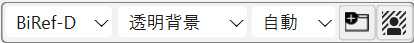

背景除去
AIが被写体を判別して、背景を透明化したり別の背景に置き換えたりします。選択範囲だけ、マスク範囲だけの処理もできます。
ツールバー

12345
| 1モデル | 背景処理に使うモデル・方式（下表）。 |
| 2背景 | 透明背景／白背景／ぼかし背景／カラー背景（カラーパレットの色）。 |
| 3閾値 | 自動、または10（除去範囲が狭い）〜90（広い）。 |
| 4フォルダ | ONにして実行すると、同じフォルダの画像すべてを処理します（実行前に、上書き保存か別ファイルとして保存かを選びます）。 |
| 5実行 | 背景除去・前景除去・色置換を実行します。 |
モデルの選び方
| モデル | 特徴 |
|---|---|
| BiRef-D（BiRefNet_dynamic） | 汎用の高精度モデル。髪や細部も比較的きれいに抜けます。まずはこれ。 |
| BiRef-M（BiRefNet_dynamic-matting） | 境界のマット処理寄り。BiRef-Dで輪郭が硬いときに。 |
| BEN2 | 人物・商品などの境界を細かく抜きます。輪郭や髪を重視するときに。 |
| base | 汎用の背景除去。安定していますが、細い髪や半透明の境界は粗くなることがあります。 |
| MVANet | 高精細なモデル。細部に強い一方、処理は重めです。 |
| 前景除去 | 通常とは逆に、前景を取り除いて背景側を残します。 |
| 色置換 | AIを使わず、ペン色に近い色を透明・白・指定色に置き換えます。単色背景向け。 |
処理の例
処理前
 処理後
処理後 処理前
処理前 処理後
処理後処理前
処理後
一部だけ処理する
- 選択ツールで範囲を選び、「選択範囲の処理」メニューの「選択範囲の背景処理」で、その範囲だけを処理できます。
- インペイントの「背景除去 (部分)」を使うと、マスクで塗った範囲だけを処理できます。